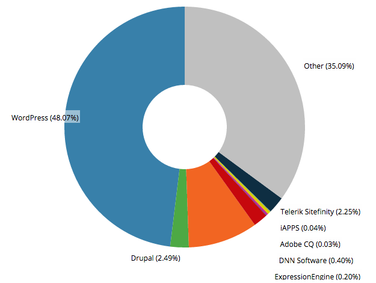
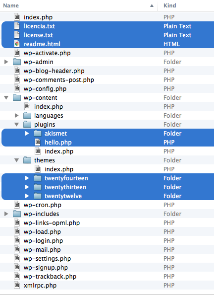
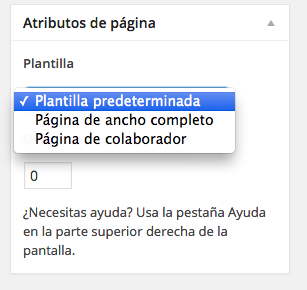
Permite extender tipos de contenido (aunque Posts y Pages son tipos de post_type) mediante la función
register_post_type();Se define en functions.php de cada plantilla
Permite agrupar contenido de un mismo tipo con ciertos criterios
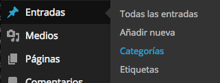
Son las taxonomías por defecto para Posts, no permite removerse
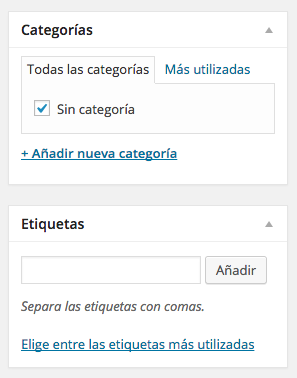
categoria/nombre.etiqueta/nombre.nombrecustomtaxonomy/nombre.persona/pedro.Un theme de Wordpress se compone de varios archivos que cumplen funciones específicas según su lugar en la estructura funcional, pero básicamente se necesitan sólo 2 archivos:

El loop debe estar en index.php y en toda plantilla que se use para mostrar información de su post o page para mostrar contenido referente al contenido.
<?php if ( have_posts() ) : while ( have_posts() ) : the_post(); ?>
// CONTENIDO por ejemplo, el titulo de este post/page:
<h1><?php the_title(); ?></h1>
<?php endwhile; else: ?>
// SI NO EXISTE, 404 o mensaje
<?php endif; ?>Con la clase WP_Query(); te entrega más y mejores parámetros argumentos y métodos, por ejemplo, traerse los posts que estén en la categoría Noticias:
<?php $query_noticias = new WP_Query( 'category_name=noticias' ); ?>
<?php while ( $query_noticias->have_posts() ) : $query_noticias->the_post(); ?>
// POSTS CON NOTICIAS
<?php endwhile; ?>WordPress Template Tags | WordPress Chart Sheet
get_header()
get_footer()
get_sidebar()
get_search_form()
wp_meta()
bloginfo()
get_bloginfo()
wp_title()
single_post_title()
single_cat_title()
single_tag_title()
wp_enqueue_script()the_author()
get_the_author()
the_author_link()
get_the_author_link()
the_author_meta()
the_author_posts()
the_author_posts_link()
wp_list_authors()
get_author_posts_url()category_description()
single_cat_title()
the_category()
wp_list_categories()
single_tag_title()
the_tags()
wp_tag_cloud()
the_taxonomies()comment_author()
comment_author_email()
comment_author_IP()
comment_author_url()
comment_class()
comment_date()
comment_form()
comment_ID()
comment_text()
comment_time()
get_avatar()
wp_list_comments()the_permalink()
get_permalink()
get_attachment_link()
get_home_url()
get_site_url()
home_url()
site_url()
get_search_link()
get_search_query()body_class()
post_class()
single_post_title()
the_category()
the_content()
the_excerpt()
the_ID()
the_title()
get_attachment_link()
wp_get_attachment_link()
the_date()
the_time()wp_nav_menu()Permite crear reglas dependiendo si la condición (nativa de WordPress) existe:
is_home()
is_front_page()
is_admin()
is_single() // ID | name | slug | array
is_page() // ID | name | slug | array
is_page_template() // filename
is_category() // ID | name | slug | array
is_tag() // name | slug | array
is_tax() // name | slug | array
is_author() // ID | name | slug | array
is_404()
is_attachment()
post_type_exists() // Post type name
is_plugin_active() // plugin name
has_post_thumbnail() // ID// remove WP3.1 admin bar
add_filter('show_admin_bar', '__return_false');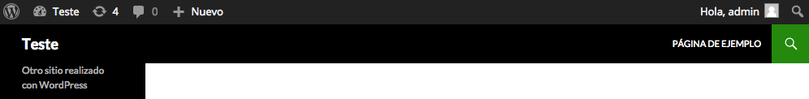
// removing dashboard widgets
function example_remove_dashboard_widgets() {
global $wp_meta_boxes;
unset($wp_meta_boxes['dashboard']['normal']['core']['dashboard_recent_comments']);
unset($wp_meta_boxes['dashboard']['side']['core']['dashboard_quick_press']);
unset($wp_meta_boxes['dashboard']['normal']['core']['dashboard_plugins']);
unset($wp_meta_boxes['dashboard']['side']['core']['dashboard_primary']);
unset($wp_meta_boxes['dashboard']['side']['core']['dashboard_secondary']);
}
add_action('wp_dashboard_setup', 'example_remove_dashboard_widgets' );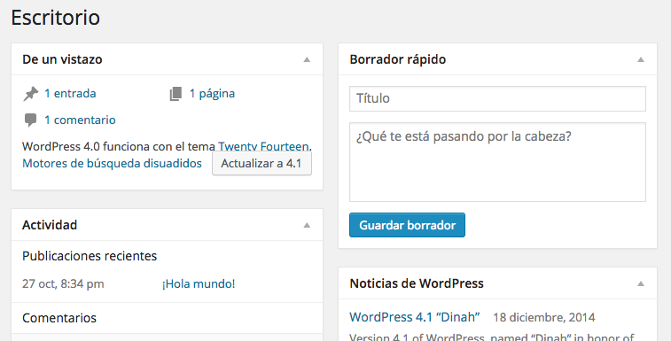
// custom logo
function my_custom_login_logo() {
echo '';
}
function my_custom_logo() {
echo '';
}
add_action('login_head', 'my_custom_login_logo');
add_action('admin_head', 'my_custom_logo');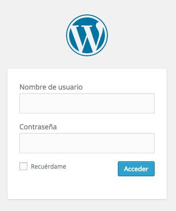
// remove updatenag
add_action('admin_menu','wp_hide_update');
function wp_hide_update() {
remove_action( 'admin_notices', 'update_nag', 3 );
}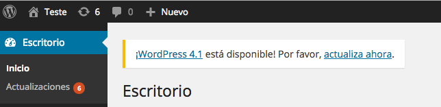
// remove theme and plugin editor
define('DISALLOW_FILE_EDIT', true);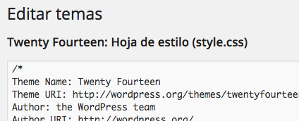
// remove junk from head
remove_action('wp_head', 'rsd_link');
remove_action('wp_head', 'wp_generator');
remove_action('wp_head', 'feed_links', 2);
remove_action('wp_head', 'index_rel_link');
remove_action('wp_head', 'wlwmanifest_link');
remove_action('wp_head', 'feed_links_extra', 3);
remove_action('wp_head', 'start_post_rel_link', 10, 0);
remove_action('wp_head', 'parent_post_rel_link', 10, 0);
remove_action('wp_head', 'adjacent_posts_rel_link', 10, 0);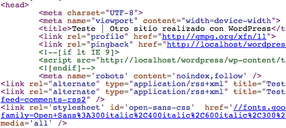
WordPress permite que cada contenido tenga campos personalizados, del tipo meta-data. El tipo de información que guarda es del tipo key => value.

Extensión de un custom field con el cual permite personalización a cada tipo de contenido. Se define en functions.php de cada plantilla
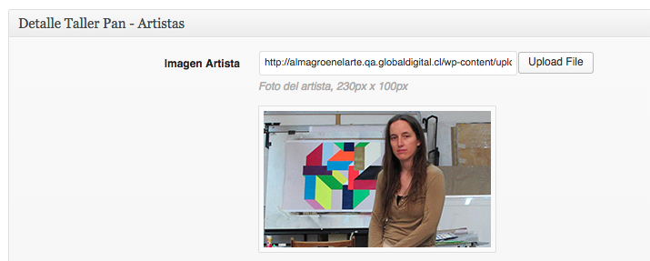
WordPress permite administrar tantos menúes como sean necesarios de forma nativa, a través de wp_nav_menu();
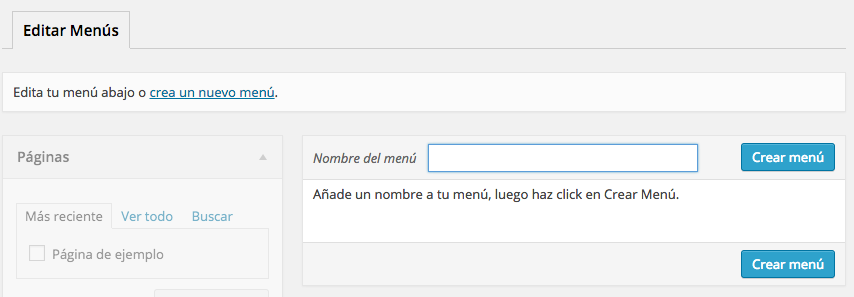
Plugins y Widgets extienden funcionalidades nativas y crean nuevas que no existen en el core de WordPress.
Pieza de código funcional independiente de la plantilla, se activa para todo WordPress.
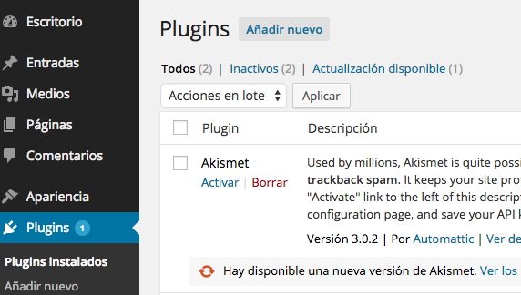
Pieza de código funcional dependiente de la plantilla y que tiene directa relación con la interfaz, permite ser ubicado en determinadas zonas de la plantilla y posee un sistema de administración propio mediante drag & drop.
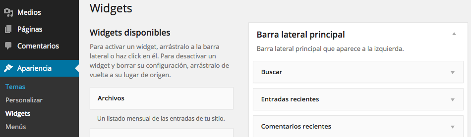
get_option(); y update_option();add_theme_support('post-thumbnails')
add_image_size('imagen_post', 220, 220, false);<html <?php language_attributes(); >>
<meta charset="<?php bloginfo('charset'); ?>">define( 'WP_POST_REVISIONS', 3 );$wpdb();